Logical reasoning
2025-02-17
Inference
- Inference is logical reasoning
Scientific reasoning is inductive reasoning
XXX
Statistical inference
- Statistical inference is inductive inference using incomplete data and a model of the data generating process (DGP) as evidence
XXX


Statistical inference

Shmueli (2010) To Explain or to Predict?
Example data (and frequentist inference)
LPS treatment blunts UCP1 expression in subcutaneous adipocytes
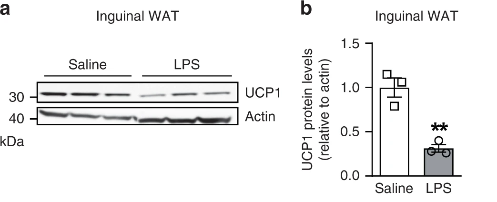
Values are expressed as mean ± SEM. **p = 0.004. Statistical test used: two-sided t-test.
Figure 1 from ASK1 inhibits browning of white adipose tissue in obesity
Lucchini et al. (2020) Nat Commun 11(1):1642
Statistical inference

Causal inference

Knowledge-based AI
Logic (e.g., propositional logic or first-order logic) is a language used to represent knowledge and to reason (draw conclusions, make inferences) based on this knowledge
Logic is used in a knowledge-based AI agent to represent knowledge and to reason (draw conclusions, make inferences) based on this knowledge
In deductive logic the goal is to determine whether an argument is valid (the premises entail the conclusion), using some inference algorithm or rules
In inductive logic the goal is to determine whether an argument is strong (the premises partially entail the conclusion), using some inference algorithm or rules
Deductive inference: Propositional logic
The goal is to prove that a conclusion/hypothesis/query is true given some premises/evidence/knowledge known or assumed to be true
\(E \models C\)
\(P(C \mid E) = 1\)
Arguments/Rules of deductive inference
Knowledge-based AI capable of logical reasoning
Knowledge engineering
Argument forms as inference rules of propositional logic/deductive inference:
Modus ponens
And elimination rule
Unit resolution rule
Double negation elimination rule
Implication elimination rule
Biconditional elimination rule
De Morgan’s law (1)
De Morgan’s law (2)
Distributive law (1)
Distributive law (2)
Modus tollens
Propositional logic
XXX
Propositional symbols/variables
In propositional logic, the terms propositional symbol and propositional variable are often used interchangeably to denote atomic propositions—statements that are either true or false and cannot be broken down into simpler statements. These atomic propositions serve as the foundational building blocks for more complex, compound propositions formed using logical connectives/boolean operators such as AND, OR, and NOT.
Setup environment
Observations
Process model
- Given a process model (a.k.a. data model, generative model, or likelihood):
\[p(x, y \mid M)\]
Process model
- Given a process model (a.k.a. data model, generative model, or likelihood):
\[p(x, y \mid \theta, M^*)\]
Process model
- Given a process model (a.k.a. data model, generative model, or likelihood):
\[p(x, y \mid \theta)\]
- Assuming \(p(x \mid \theta) = p(x)\):
\[p(x, y \mid \theta) \propto p(y \mid x, \theta)\]
- Assuming the standard linear regression model \(M_{L+E_N}\):
\[Y = \beta_0 + \beta_1 \cdot x + \epsilon \quad \epsilon \sim N(0, \sigma)\]
- The regression likelihood \(p(y \mid x, \theta)\) is:
\[p(y \mid x, \beta_0, \beta_1, \sigma, M_{L+E_N})\]
Process model
- Given a process model (a.k.a. data model, generative model, or likelihood):
\[p(x, y \mid \theta)\]
- Assuming \(p(x \mid \theta) = p(x)\):
\[p(x, y \mid \theta) \propto p(y \mid x, \theta)\]
- Assuming the standard linear regression model \(M_{L+E_N}\):
\[Y = \beta_0 + \beta_1 \cdot x + \epsilon \quad \epsilon \sim N(0, \sigma)\]
- The regression likelihood \(p(y \mid x, \theta)\) is:
\[p(y \mid \mu, \sigma, M_N) \quad \mu = \beta_0 + \beta_1 \cdot x\]
Standard linear regression likelihood
- The regression likelihood \(p(y \mid x, \theta)\) is:
\[p(y \mid \mu, \sigma, M_N) \quad \mu = \beta_0 + \beta_1 \cdot x\]
\[Y \sim N(\mu, \sigma) \quad \mu = \beta_0 + \beta_1 \cdot x\]
\[p(y \mid \mu, \sigma, M_N) = \frac{1}{\sigma \sqrt{2\pi}} \cdot e^{-\frac{1}{2} \left( \frac{y - \mu}{\sigma} \right)^2}\]
\[p(y \mid x, \beta_0, \beta_1, \sigma, M_{L+E_N}) = \frac{1}{\sigma \sqrt{2\pi}} \cdot e^{-\frac{1}{2} \left( \frac{y - (\beta_0 + \beta_1 \cdot x)}{\sigma} \right)^2}\]
p = dnorm(Y, mean = b0 + b1 * X, sd = sigma)
Standard linear regression model 2: Visualization
\[p(y \mid x, \beta_0 = 10, \beta_1 = -7, \sigma = 1)\]
ss %>%
mutate(
b0 = 10,
b1 = -7,
sigma = 1,
mu = b0 + b1 * X) %>%
mutate(p = ddnorm(Y, mean = mu, sd = sigma)) %>%
gf_tile(Y ~ X, fill = ~ p, color = "black", linewidth = 0.5) %>% gf_labs(title = latex2exp::TeX(r"($p(y \ |\ x, M_{2^*})$)")) %>%
gf_text(label = ~ sprintf("%0.4f", p)) %>% gf_refine(scale_fill_continuous(low = "white", high = "blue", limits = c(0, 1)), scale_x_continuous(breaks = seq(0, 1)), scale_y_continuous(breaks = seq(0, 15)))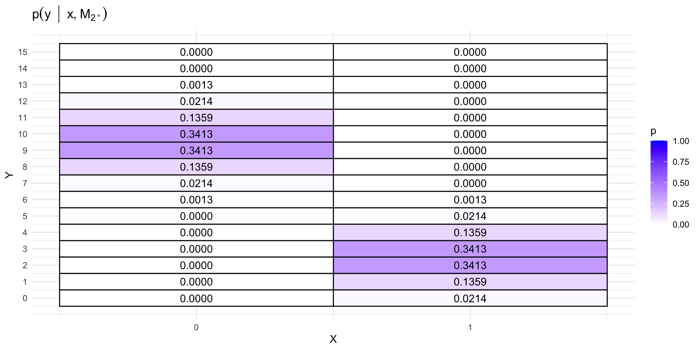
Standard linear regression model 2: Sampling
\[p(y \mid x, \beta_0 = 10, \beta_1 = -7, \sigma = 1)\]
ss %>%
mutate(
b0 = 10,
b1 = -7,
sigma = 1,
mu = b0 + b1 * X) %>%
mutate(p = ddnorm(Y, mean = mu, sd = sigma)) %>%
slice_sample(n = 3, by = X, weight_by = p, replace = TRUE) %>%
gf_jitter(Y ~ factor(X), width = 0.25, height = 0) %>% gf_labs(title = latex2exp::TeX(r"($n = 6$ data points $\left(x_i, y_i\right)$ sampled with replacement from $p(x, y \ |\ M_{2^*})$)"), x = "X") %>% gf_refine(scale_y_continuous(limits = c(0, 15), breaks = seq(0, 15), minor_breaks = NULL))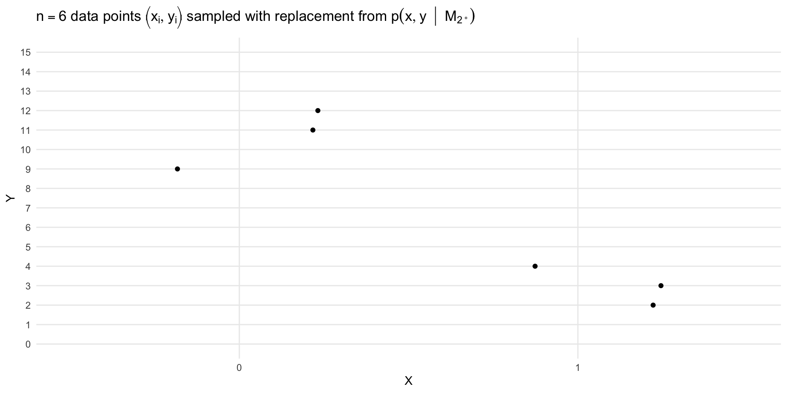
Standard linear regression model 2: Sims vs obs
\[p(y \mid x, \beta_0 = 10, \beta_1 = -7, \sigma = 1)\]
ss %>%
mutate(
b0 = 10,
b1 = -7,
sigma = 1,
mu = b0 + b1 * X) %>%
mutate(p = ddnorm(Y, mean = mu, sd = sigma)) %>%
slice_sample(n = 3, by = X, weight_by = p, replace = TRUE) %>%
gf_jitter(Y ~ factor(X), width = 0.25, height = 0) %>% gf_jitter(Y ~ factor(X), data = d.obs, width = 0.25, height = 0, color = "red") %>% gf_labs(title = latex2exp::TeX(r"($n = 6$ data points $\left(x_i, y_i\right)$ sampled with replacement from $p(y \ |\ x, M_{2^*})$ + observations in red)"), x = "X") %>% gf_refine(scale_y_continuous(limits = c(0, 15), breaks = seq(0, 15), minor_breaks = NULL))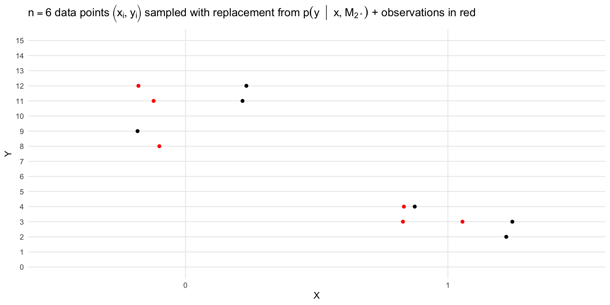
Process model and statistical inference
- Given a process model (a.k.a. data model, generative model, or likelihood):
\[p(x, y \mid \theta)\]
- The corresponding inference model is:
\[p(\theta \mid x, y) = \frac{p(\theta) \cdot p(x, y \mid \theta)}{p(x, y)}\]
\(p(\theta \mid x, y)\) is called the posterior distribution
\(p(\theta)\) is called the prior distribution
\(p(x, y \mid \theta)\) is called the likelihood
\(p(x, y)\) is a normalizing constant a.k.a. the marginal likelihood \(= \sum_\theta p(x, y \mid \theta)\)
\[p(\theta \mid x, y) \propto p(\theta) \cdot p(x, y \mid \theta)\]
Bayesian inference using the linear model
- The inference model:
\[p(\theta \mid x, y) \propto p(\theta) \cdot p(x, y \mid \theta)\]
- Assuming a standard linear regression model:
\[p(\beta_0, \beta_1, \sigma \mid x, y) \propto p(\beta_0, \beta_1, \sigma) \cdot p(y \mid x, \beta_0, \beta_1, \sigma)\]
- Assuming \(p(\beta_0, \beta_1, \sigma) = p(\beta_0) \cdot p(\beta_1) \cdot p(\sigma)\):
\[p(\beta_0, \beta_1, \sigma \mid x, y) \propto p(\beta_0) \cdot p(\beta_1) \cdot p(\sigma) \cdot p(y \mid x, \beta_0, \beta_1, \sigma)\]
Prior probability distribution
- Assuming the prior probability distribution of parameter \(\beta_0\) is:
\[ p(\beta_0, \text{min} = 0, \text{max} = 15, M_U) \quad \beta_0 \sim U(\text{min} = 0, \text{max} = 15) \]
- Assuming the prior probability distribution of parameter \(\beta_1\) is:
\[ p(\beta_1, \text{min} = -15, \text{max} = 15, M_U) \quad \beta_1 \sim U(\text{min} = -15, \text{max} = 15) \]
- Assuming the prior probability distribution of parameter \(\sigma\) is:
\[ p(\sigma, \text{min} = 1, \text{max} = 6, M_U) \quad \sigma \sim U(\text{min} = 1, \text{max} = 6) \]
Prior probability distribution
- The joint prior probability distribution of parameters \(\beta_0\), \(\beta_1\), and \(\sigma\) is:
\[p(\beta_0, \text{min} = 0, \text{max} = 15, M_U) \cdot p(\beta_1, \text{min} = -15, \text{max} = 15, M_U) \cdot p(\sigma, \text{min} = 1, \text{max} = 6, M_U)\]
Sample space
Prior probability distribution
Prior probability distribution
ss %>%
rowwise() %>%
mutate(
prior = ddunif(b0, min = 0, max = 15) * ddunif(b1, min = -15, max = 15) * ddunif(sigma, min = 1, max = 6)) %>%
ungroup() %>%
gf_tile(b0 ~ b1 | sigma, fill = ~ prior, color = "black", linewidth = 0.1) %>%
gf_refine(scale_fill_continuous(low = "white", high = "blue", limits = c(0, 1)), scale_x_continuous(breaks = seq(-15, 15)), scale_y_continuous(breaks = seq(0, 15)), theme(panel.grid.major = element_blank(), panel.grid.minor = element_blank(), axis.text = element_text(size = 4)))Prior probability distribution
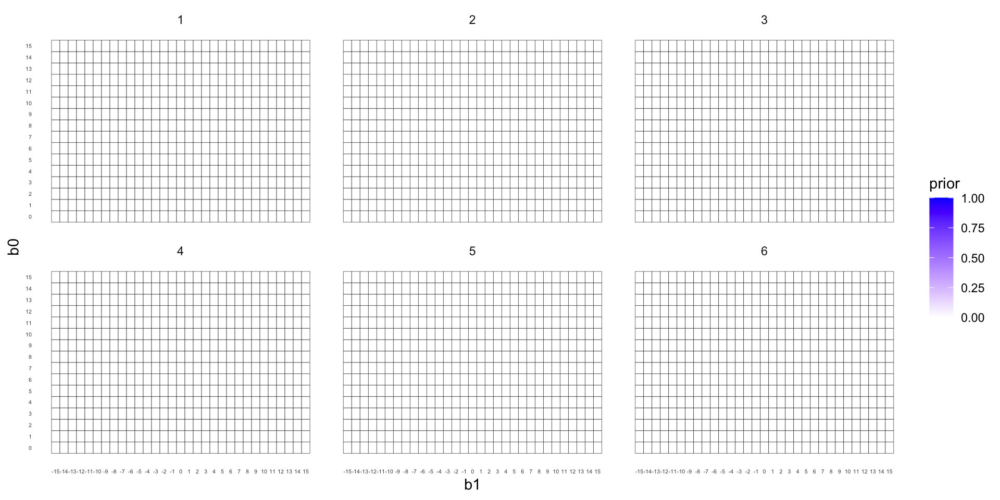
Prior probability distribution
Standard linear regression likelihood
- Compute likelihood of a single data point for each combination of parameters:
ss %>%
mutate(
X = 0,
Y = 11) %>%
rowwise() %>%
mutate(
mu = b0 + b1 * X,
likelihood = ddnorm(Y, mu, sigma)) %>%
ungroup() %>%
head()| Ω | b0 | b1 | sigma | X | Y | mu | likelihood |
|---|---|---|---|---|---|---|---|
| ⍵1 | 0 | -15 | 1 | 0 | 11 | 0 | 0.0000 |
| ⍵2 | 0 | -15 | 2 | 0 | 11 | 0 | 0.0000 |
| ⍵3 | 0 | -15 | 3 | 0 | 11 | 0 | 0.0001 |
| ⍵4 | 0 | -15 | 4 | 0 | 11 | 0 | 0.0016 |
| ⍵5 | 0 | -15 | 5 | 0 | 11 | 0 | 0.0057 |
| ⍵6 | 0 | -15 | 6 | 0 | 11 | 0 | 0.0106 |
Standard linear regression likelihood
- Compute likelihood of a single data point for each combination of parameters:
ss %>%
mutate(
X = 0,
Y = 11) %>%
rowwise() %>%
mutate(
mu = b0 + b1 * X,
likelihood = ddnorm(Y, mu, sigma)) %>%
ungroup() %>%
gf_tile(b0 ~ b1 | sigma, fill = ~ likelihood, color = "black", linewidth = 0.1) %>%
gf_refine(scale_fill_continuous(low = "white", high = "blue"), scale_x_continuous(breaks = seq(-15, 15)), scale_y_continuous(breaks = seq(0, 15)), theme(panel.grid.major = element_blank(), panel.grid.minor = element_blank(), axis.text = element_text(size = 4))) # auto scale p for better vizStandard linear regression likelihood
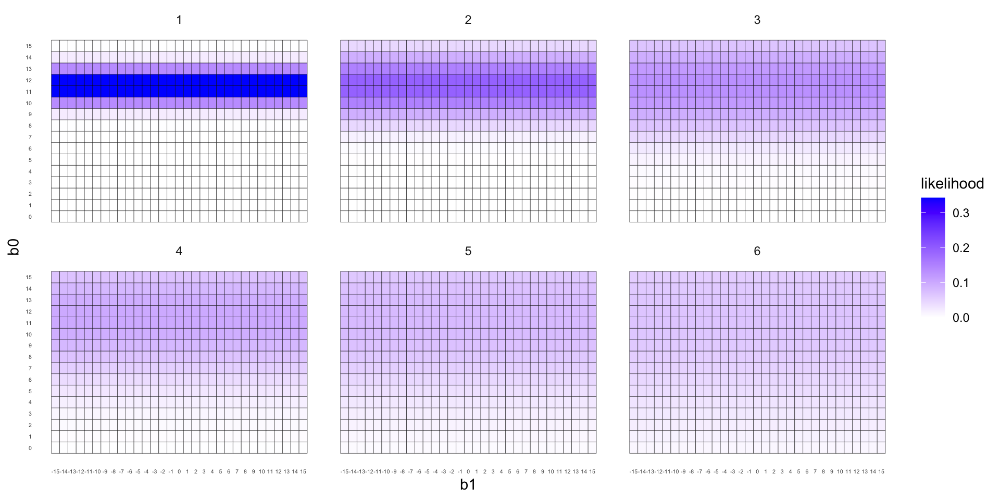
Standard linear regression likelihood
- Compute likelihood of a single data point for each combination of parameters:
ss %>%
mutate(
X = 1,
Y = 3) %>%
rowwise() %>%
mutate(
mu = b0 + b1 * X,
likelihood = ddnorm(Y, mu, sigma)) %>%
ungroup() %>%
gf_tile(b0 ~ b1 | sigma, fill = ~ likelihood, color = "black", linewidth = 0.1) %>%
gf_refine(scale_fill_continuous(low = "white", high = "blue"), scale_x_continuous(breaks = seq(-15, 15)), scale_y_continuous(breaks = seq(0, 15)), theme(panel.grid.major = element_blank(), panel.grid.minor = element_blank(), axis.text = element_text(size = 4))) # auto scale p for better vizStandard linear regression likelihood
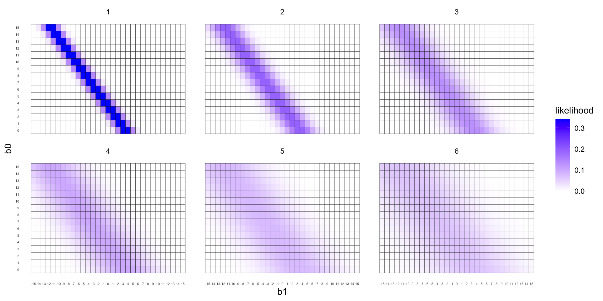
Standard linear regression likelihood
- Compute likelihood of multiple data points for each combination of parameter, assuming observations are independent and identically distributed (i.i.d.):
Standard linear regression likelihood
| Ω | b0 | b1 | sigma | data | likelihood |
|---|---|---|---|---|---|
| ⍵1 | 0 | -15 | 1 | 0, 0, 0, 1, 1, 1, 11, 12, 8, 3, 4, 3 | 0 |
| ⍵2 | 0 | -15 | 2 | 0, 0, 0, 1, 1, 1, 11, 12, 8, 3, 4, 3 | 0 |
| ⍵3 | 0 | -15 | 3 | 0, 0, 0, 1, 1, 1, 11, 12, 8, 3, 4, 3 | 0 |
| ⍵4 | 0 | -15 | 4 | 0, 0, 0, 1, 1, 1, 11, 12, 8, 3, 4, 3 | 0 |
| ⍵5 | 0 | -15 | 5 | 0, 0, 0, 1, 1, 1, 11, 12, 8, 3, 4, 3 | 0 |
| ⍵6 | 0 | -15 | 6 | 0, 0, 0, 1, 1, 1, 11, 12, 8, 3, 4, 3 | 0 |
Standard linear regression likelihood
- Compute likelihood of multiple data points for each combination of parameter, assuming observations are independent and identically distributed (i.i.d.):
ss %>%
mutate(
data = list(d.obs) # add a list column containing d.obs in each row
) %>%
rowwise() %>%
mutate(
likelihood = {
data %>%
mutate(
mu = b0 + b1 * X,
likelihood = ddnorm(Y, mu, sigma)
) %>%
pull(likelihood) %>%
prod()
}
) %>%
ungroup() %>%
gf_tile(b0 ~ b1 | sigma, fill = ~ likelihood, color = "black", linewidth = 0.1) %>%
gf_refine(scale_fill_continuous(low = "white", high = "blue"), scale_x_continuous(breaks = seq(-15, 15)), scale_y_continuous(breaks = seq(0, 15)), theme(panel.grid.major = element_blank(), panel.grid.minor = element_blank(), axis.text = element_text(size = 4))) # auto scale p for better vizStandard linear regression likelihood
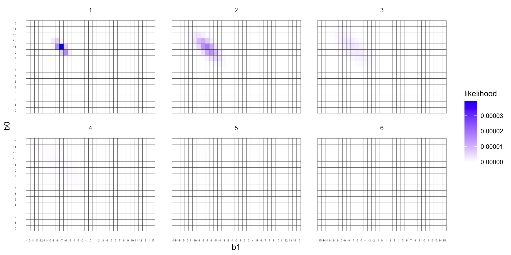
Posterior probability distribution
- Compute posterior probability distribution by multiplying prior and likelihood:
ss %<>%
mutate(
data = list(d.obs) # add a list column containing d.obs in each row
) %>%
rowwise() %>%
mutate(
prior = ddunif(b0, min = 0, max = 15) * ddunif(b1, min = -15, max = 15) * ddunif(sigma, min = 1, max = 6),
likelihood = {
data %>%
mutate(
mu = b0 + b1 * X,
likelihood = ddnorm(Y, mu, sigma)
) %>%
pull(likelihood) %>%
prod()
},
posterior.unnormalized = prior * likelihood
) %>%
ungroup() %>%
mutate(posterior = posterior.unnormalized / sum(posterior.unnormalized))
ss %>%
gf_tile(b0 ~ b1 | sigma, fill = ~ posterior, color = "black", linewidth = 0.1) %>%
gf_refine(scale_fill_continuous(low = "white", high = "blue"), scale_x_continuous(breaks = seq(-15, 15)), scale_y_continuous(breaks = seq(0, 15)), theme(panel.grid.major = element_blank(), panel.grid.minor = element_blank(), axis.text = element_text(size = 4))) # auto scale p for better vizPosterior probability distribution
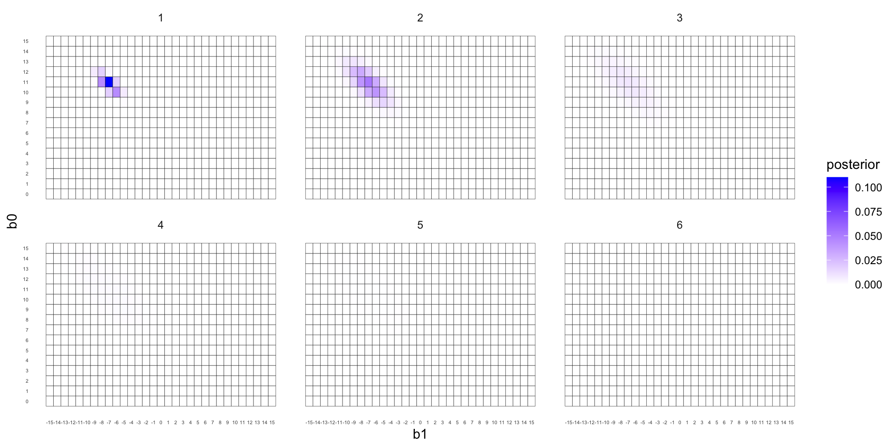
Marginal prior probability distributions
ss %>%
pivot_longer(cols = c(b0, b1, sigma), names_to = "parameter", values_to = "value") %>%
group_by(parameter, value) %>%
summarise(prior = sum(prior), .groups = "drop") %>%
gf_line(prior ~ value | parameter, color = ~ parameter) %>%
gf_facet_grid(parameter ~ .) %>%
gf_lims(x = c(-15, 15), y = c(0, 0.5)) %>%
gf_refine(theme(legend.position = "none"))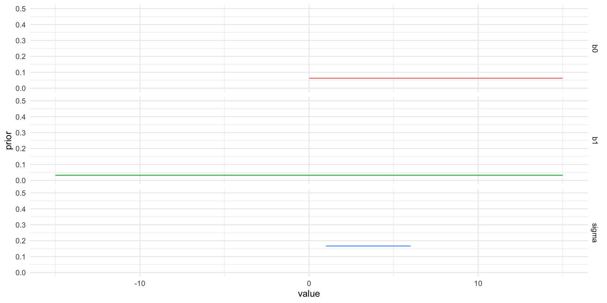
Marginal posterior probability distribution
ss %>%
pivot_longer(cols = c(b0, b1, sigma), names_to = "parameter", values_to = "value") %>%
group_by(parameter, value) %>%
summarise(posterior = sum(posterior), .groups = "drop") %>%
gf_line(posterior ~ value | parameter, color = ~ parameter) %>%
gf_facet_grid(parameter ~ .) %>%
gf_lims(x = c(-15, 15), y = c(0, 0.5)) %>%
gf_refine(theme(legend.position = "none"))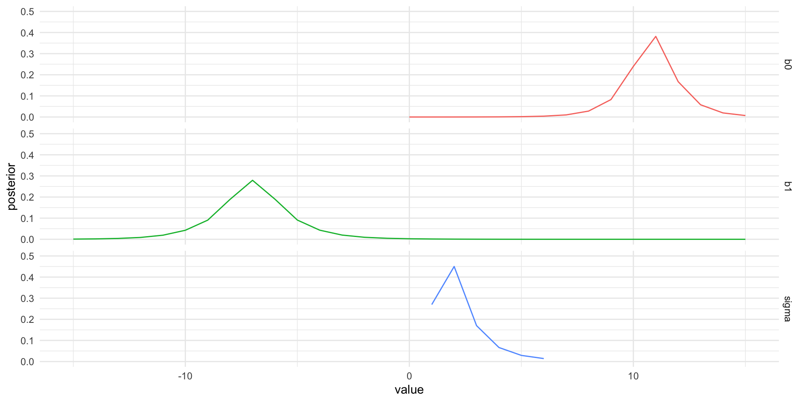
Plot prior lines
# generate two data points for each sampled line
line_data <- sampled_params %>%
crossing(X = c(0, 1)) %>%
mutate(Y = b0 + b1 * X)
# plot observed data and sampled lines
gf_line(Y ~ X, group = ~ interaction(b0, b1), data = line_data,
color = "gray", alpha = 0.5) %>%
gf_lims(x = c(-0.5, 1.5), y = c(0, 15)) %>%
gf_refine(
theme(
panel.grid.major = element_blank(), # Remove major gridlines
panel.grid.minor = element_blank(), # Remove minor gridlines
panel.background = element_blank(), # Optional: Remove panel background
axis.line = element_line(color = "gray") # Add axis lines for clarity
)
)Plot prior lines
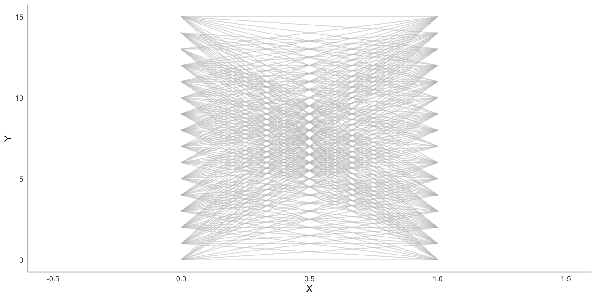
Plot posterior lines
# generate two data points for each sampled line
line_data <- sampled_params %>%
crossing(X = c(0, 1)) %>%
mutate(Y = b0 + b1 * X)
# plot observed data and sampled lines
gf_jitter(Y ~ X, data = d.obs, color = "red", size = 2, width = 0.1) %>%
gf_line(Y ~ X, group = ~ interaction(b0, b1), data = line_data,
color = "gray", alpha = 0.5) %>%
gf_lims(x = c(-0.5, 1.5), y = c(0, 15)) %>%
gf_refine(
theme(
panel.grid.major = element_blank(), # Remove major gridlines
panel.grid.minor = element_blank(), # Remove minor gridlines
panel.background = element_blank(), # Optional: Remove panel background
axis.line = element_line(color = "gray") # Add axis lines for clarity
)
)Plot posterior lines
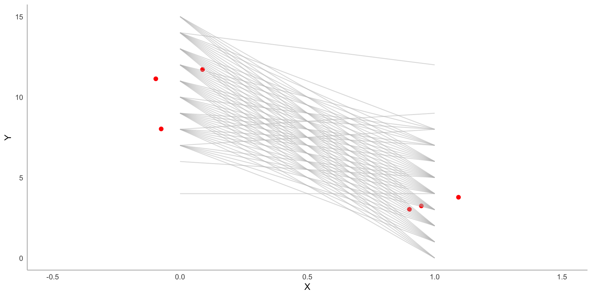
Bayesian inference using the linear model
posterior_draws <- ss %>%
slice_sample(n = 1000, weight_by = posterior, replace = TRUE) %>%
select(b0, b1, sigma) %>%
as_draws_df()
summarize_draws(posterior_draws)| variable | mean | median | sd | mad | q5 | q95 | rhat | ess_bulk | ess_tail |
|---|---|---|---|---|---|---|---|---|---|
| b0 | 10.836 | 11 | 1.343 | 1.483 | 9 | 13.00 | 0.9993 | 970.8 | 1059.9 |
| b1 | -7.014 | -7 | 1.895 | 1.483 | -10 | -4.00 | 0.9992 | 938.4 | 856.5 |
| sigma | 2.193 | 2 | 1.086 | 1.483 | 1 | 4.05 | 0.9993 | 984.3 | 913.4 |
Bayesian inference using the linear model
Bayesian inference using the linear model
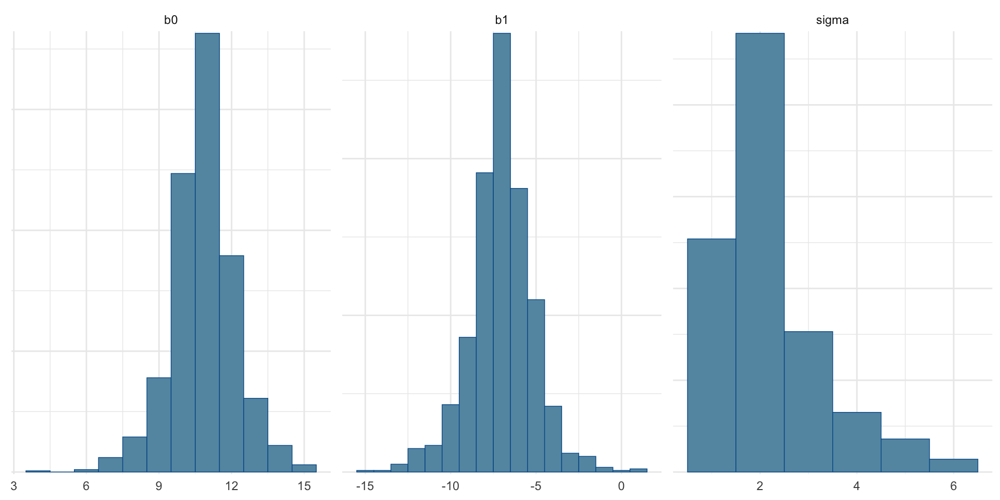
Bayesian inference using the linear model
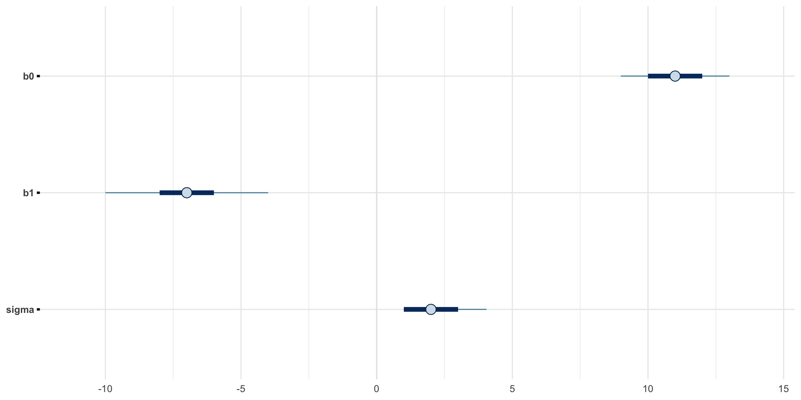
Bayesian inference using the linear model
Model Info:
function: stan_glm
family: gaussian [identity]
formula: Y ~ X
algorithm: sampling
sample: 4000 (posterior sample size)
priors: see help('prior_summary')
observations: 6
predictors: 2
Estimates:
mean sd 10% 50% 90%
(Intercept) 10.4 1.4 8.9 10.3 11.9
X -6.9 2.0 -9.0 -6.9 -4.8
sigma 2.1 1.0 1.2 1.8 3.2
Fit Diagnostics:
mean sd 10% 50% 90%
mean_PPD 6.9 1.4 5.4 6.9 8.5
The mean_ppd is the sample average posterior predictive distribution of the outcome variable (for details see help('summary.stanreg')).
MCMC diagnostics
mcse Rhat n_eff
(Intercept) 0.0 1.0 1538
X 0.1 1.0 1385
sigma 0.0 1.0 979
mean_PPD 0.0 1.0 2427
log-posterior 0.1 1.0 714
For each parameter, mcse is Monte Carlo standard error, n_eff is a crude measure of effective sample size, and Rhat is the potential scale reduction factor on split chains (at convergence Rhat=1).Bayesian inference using the linear model
Bayesian inference using the linear model
Bayesian inference using the linear model
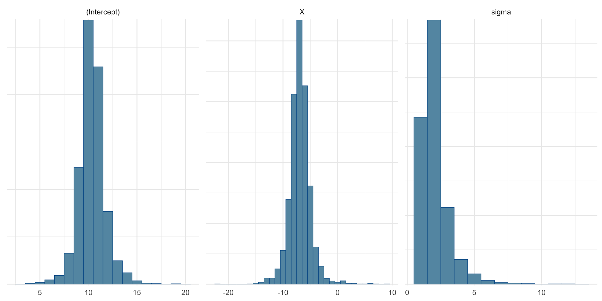
Bayesian inference using the linear model
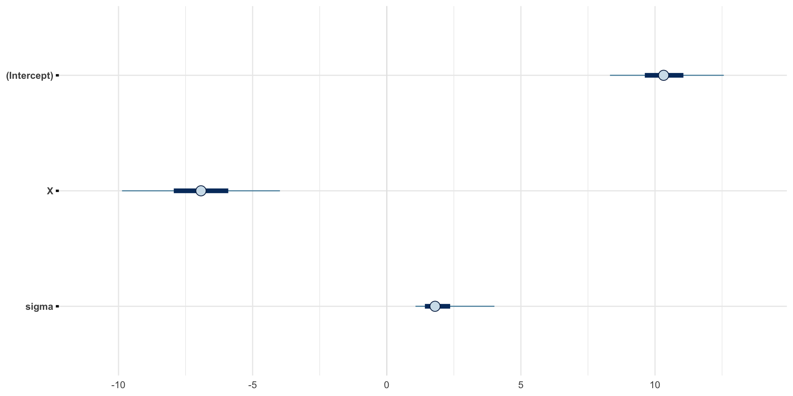
Bayesian inference using the linear model
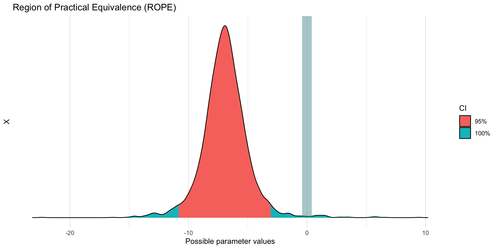
Bayesian inference using the linear model
Posterior with uniform priors
ss %<>%
mutate(
data = list(d.obs) # add a list column containing d.obs in each row
) %>%
rowwise() %>%
mutate(
prior = ddunif(b0, min = 0, max = 15) * ddunif(b1, min = -15, max = 15) * ddunif(sigma, min = 1, max = 6),
likelihood = {
data %>%
mutate(
mu = b0 + b1 * X,
likelihood = ddnorm(Y, mu, sigma)
) %>%
pull(likelihood) %>%
prod()
},
posterior.unnormalized = prior * likelihood
) %>%
ungroup() %>%
mutate(posterior = posterior.unnormalized / sum(posterior.unnormalized))
ss %>%
gf_tile(b0 ~ b1 | sigma, fill = ~ posterior, color = "black", linewidth = 0.1) %>%
gf_refine(scale_fill_continuous(low = "white", high = "blue"), scale_x_continuous(breaks = seq(-15, 15)), scale_y_continuous(breaks = seq(0, 15)), theme(panel.grid.major = element_blank(), panel.grid.minor = element_blank(), axis.text = element_text(size = 4))) # auto scale p for better vizPosterior with uniform priors

Marginal prior probability distributions
ss %>%
pivot_longer(cols = c(b0, b1, sigma), names_to = "parameter", values_to = "value") %>%
group_by(parameter, value) %>%
summarise(prior = sum(prior), .groups = "drop") %>%
gf_line(prior ~ value | parameter, color = ~ parameter) %>%
gf_facet_grid(parameter ~ .) %>%
gf_lims(x = c(-15, 15), y = c(0, 0.5)) %>%
gf_refine(theme(legend.position = "none"))
Marginal posterior probability distribution
ss %>%
pivot_longer(cols = c(b0, b1, sigma), names_to = "parameter", values_to = "value") %>%
group_by(parameter, value) %>%
summarise(posterior = sum(posterior), .groups = "drop") %>%
gf_line(posterior ~ value | parameter, color = ~ parameter) %>%
gf_facet_grid(parameter ~ .) %>%
gf_lims(x = c(-15, 15), y = c(0, 0.5)) %>%
gf_refine(theme(legend.position = "none"))
Posterior with non-uniform priors
ss %<>%
mutate(
data = list(d.obs) # add a list column containing d.obs in each row
) %>%
rowwise() %>%
mutate(
prior = ddunif(b0, min = 0, max = 15) * ddnorm(b1, mean = 0, sd = 4) * ddgamma(sigma, shape = 1, scale = 2),
likelihood = {
data %>%
mutate(
mu = b0 + b1 * X,
likelihood = ddnorm(Y, mu, sigma)
) %>%
pull(likelihood) %>%
prod()
},
posterior.unnormalized = prior * likelihood
) %>%
ungroup() %>%
mutate(posterior = posterior.unnormalized / sum(posterior.unnormalized))
ss %>%
gf_tile(b0 ~ b1 | sigma, fill = ~ posterior, color = "black", linewidth = 0.1) %>%
gf_refine(scale_fill_continuous(low = "white", high = "blue"), scale_x_continuous(breaks = seq(-15, 15)), scale_y_continuous(breaks = seq(0, 15)), theme(panel.grid.major = element_blank(), panel.grid.minor = element_blank(), axis.text = element_text(size = 4))) # auto scale p for better vizPosterior with non-uniform priors
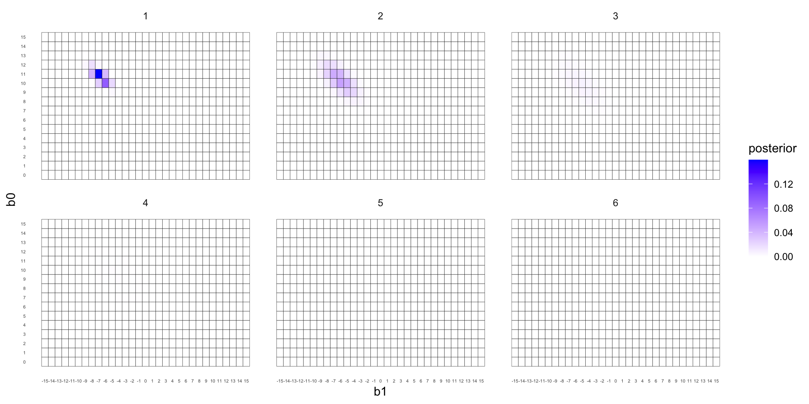
Marginal prior probability distributions
ss %>%
pivot_longer(cols = c(b0, b1, sigma), names_to = "parameter", values_to = "value") %>%
group_by(parameter, value) %>%
summarise(prior = sum(prior), .groups = "drop") %>%
gf_line(prior ~ value | parameter, color = ~ parameter) %>%
gf_facet_grid(parameter ~ .) %>%
gf_lims(x = c(-15, 15), y = c(0, 0.5)) %>%
gf_refine(theme(legend.position = "none"))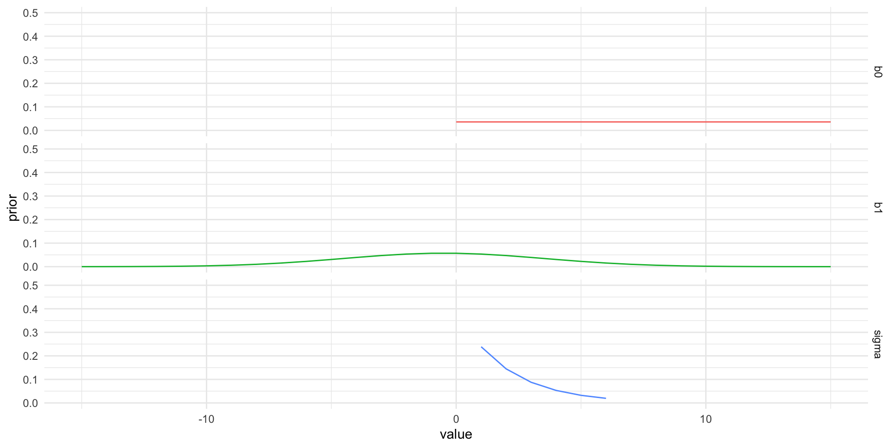
Marginal posterior probability distribution
ss %>%
pivot_longer(cols = c(b0, b1, sigma), names_to = "parameter", values_to = "value") %>%
group_by(parameter, value) %>%
summarise(posterior = sum(posterior), .groups = "drop") %>%
gf_line(posterior ~ value | parameter, color = ~ parameter) %>%
gf_facet_grid(parameter ~ .) %>%
gf_lims(x = c(-15, 15), y = c(0, 0.5)) %>%
gf_refine(theme(legend.position = "none"))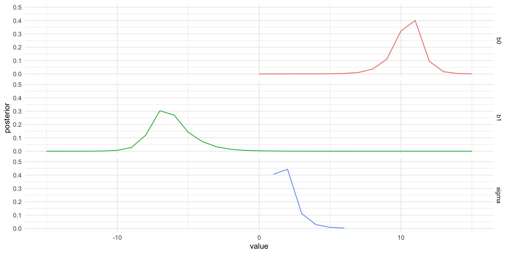
Bayesian inference using the linear model
posterior_draws <- ss %>%
slice_sample(n = 1000, weight_by = posterior, replace = TRUE) %>%
select(b0, b1, sigma) %>%
as_draws_df()
summarize_draws(posterior_draws)| variable | mean | median | sd | mad | q5 | q95 | rhat | ess_bulk | ess_tail |
|---|---|---|---|---|---|---|---|---|---|
| b0 | 10.382 | 11 | 1.1821 | 1.483 | 8 | 12 | 0.9990 | 1026.5 | 894.5 |
| b1 | -6.095 | -6 | 1.6519 | 1.483 | -8 | -3 | 0.9993 | 1049.8 | 913.9 |
| sigma | 1.829 | 2 | 0.8628 | 1.483 | 1 | 3 | 0.9995 | 960.1 | 796.6 |
Bayesian inference using the linear model
Bayesian inference using the linear model
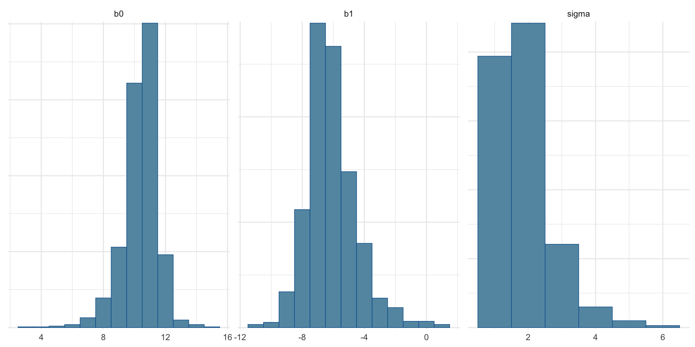
Bayesian inference using the linear model
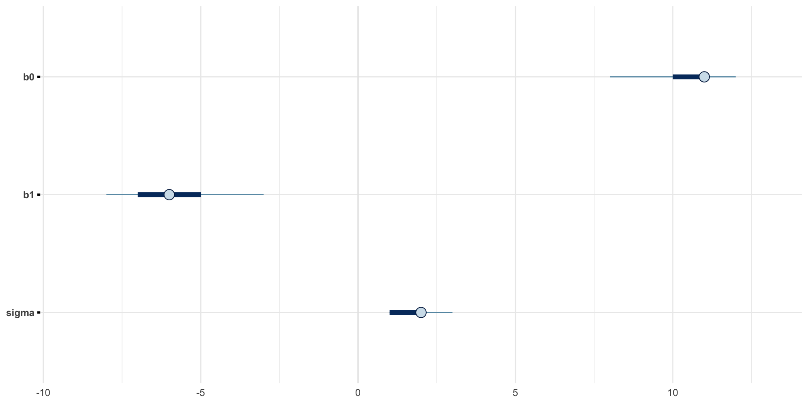
Frequentist inference using the linear model
Call:
lm(formula = Y ~ X, data = d.obs)
Residuals:
1 2 3 4 5 6
0.667 1.667 -2.333 -0.333 0.667 -0.333
Coefficients:
Estimate Std. Error t value Pr(>|t|)
(Intercept) 10.333 0.882 11.72 0.0003 ***
X -7.000 1.247 -5.61 0.0050 **
---
Signif. codes: 0 '***' 0.001 '**' 0.01 '*' 0.05 '.' 0.1 ' ' 1
Residual standard error: 1.53 on 4 degrees of freedom
Multiple R-squared: 0.887, Adjusted R-squared: 0.859
F-statistic: 31.5 on 1 and 4 DF, p-value: 0.00495Frequentist inference using the linear model
params_df <- broom::tidy(lm.fit, conf.int = TRUE)
sigma <- summary(lm.fit)$sigma
n <- nrow(d.obs)
df <- get_df(lm.fit)
conf.low <- sigma * sqrt(df / qchisq(0.975, df))
conf.high <- sigma * sqrt(df / qchisq(0.025, df))
sigma_row <- tibble(
term = "sigma",
estimate = sigma,
conf.low = conf.low,
conf.high = conf.high
)
params_df <- bind_rows(params_df, sigma_row)
gf_errorbar(conf.low + conf.high ~ term, data = params_df, width = 0.25) %>%
gf_point(estimate ~ term) %>%
gf_refine(coord_flip())Frequentist inference using the linear model
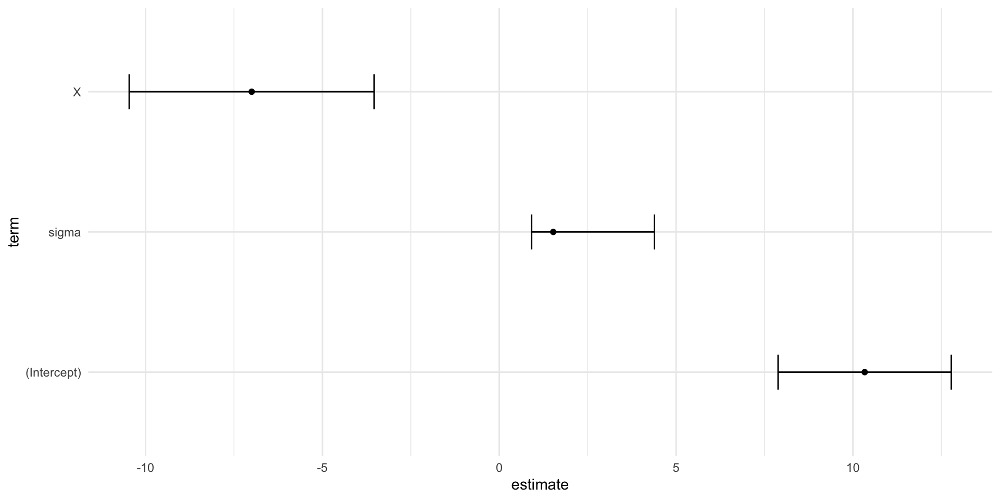
Posterior predictive distribution
ggplot() +
# Observed data points
geom_jitter(data = d.obs, aes(x = X, y = Y), color = "red", width = 0.25) +
# Posterior predictive intervals
geom_ribbon(
data = posterior_summary,
aes(x = X, ymin = Y_lower, ymax = Y_upper),
fill = "blue", alpha = 0.2
) +
# Posterior predictive mean
geom_line(data = posterior_summary, aes(x = X, y = Y_mean), color = "blue", size = 1) +
labs(title = "Posterior Predictive Distribution",
x = "X",
y = "Y") +
theme_minimal()# Simulate posterior predictive distribution
posterior_predictive_diff <- posterior_draws %>%
rowwise() %>%
mutate(
# Simulated predictions for X = 0 and X = 1
Y_pred_0 = list(b0 + b1 * 0 + runif(1000, min = -s, max = s)), # For X = 0
Y_pred_1 = list(b0 + b1 * 1 + runif(1000, min = -s, max = s)) # For X = 1
) %>%
mutate(
# Compute the mean difference between X = 1 and X = 0 for each posterior draw
diff = mean(unlist(Y_pred_1) - unlist(Y_pred_0))
) %>%
ungroup()# Plot the posterior distribution of the difference
ggplot(posterior_predictive_diff, aes(x = diff)) +
geom_density(fill = "blue", alpha = 0.2) +
geom_vline(aes(xintercept = summary_diff$point_estimate), color = "red", linetype = "dashed") +
geom_vline(aes(xintercept = summary_diff$lower_ci), color = "black", linetype = "dotted") +
geom_vline(aes(xintercept = summary_diff$upper_ci), color = "black", linetype = "dotted") +
labs(
title = "Posterior Predictive Difference (X=1 - X=0) with Uniform Error",
x = "Difference",
y = "Density"
) +
theme_minimal()